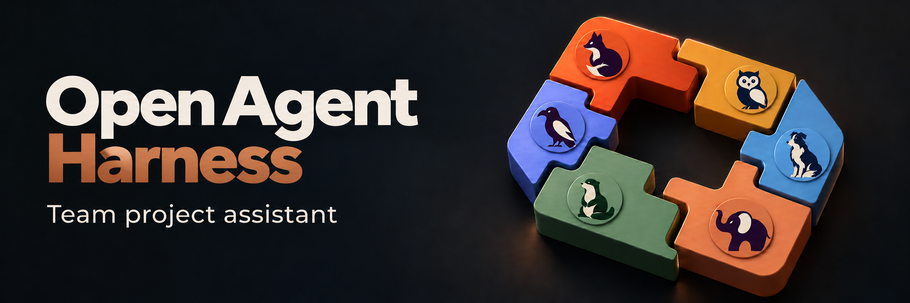

Open Agent HarnessYour team's knowledge, in Slack.
A self-hosted Slack AI assistant for team knowledge and project management. Ask about decisions, blockers and shipped work across your team's chats, issues, docs and code—with source citations.
MIT-licensed code. Early-stage project. Hosting and model costs apply.

Ask where your team already works.
- What did we decide about onboarding last week?
- Who owns this bug, and what is blocking it?
- What shipped this week?
Search across sources
Start with Slack. Add optional Telegram, Jira, GitHub and Notion integrations for the sources your team uses.
Follow the evidence
Answers include source citations so you can review the underlying context. Check important conclusions against the original sources.
Run it yourself
Deploy with Docker Compose, PostgreSQL and PGroonga. Configure an OpenAI-compatible model endpoint for your deployment.
Set up Open Agent for your team.
Install the setup skill for your coding agent:
npx skills add MUST-Company-AX-Booster/Open-Agent-Harness --skill open-agent-setupThen ask: “Set up Open Agent for my team.”
You'll need Slack, a host for the services, and a configured model endpoint. Follow the repository setup guide for requirements and configuration.
Check your team's access model.
Allowed Slack users share access to the configured history. There are currently no per-user source permissions. Connect only sources that everyone using the assistant is allowed to access.
Relevant context is sent to your configured model provider and any enabled hosted connectors. Review the security policy and repository documentation before connecting team data.
Build with us.
Bug reports, fixes, connectors and answer-quality cases are welcome.